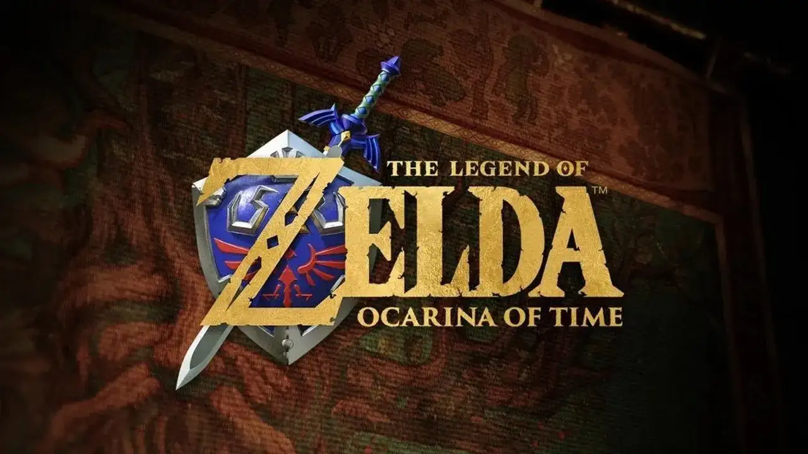
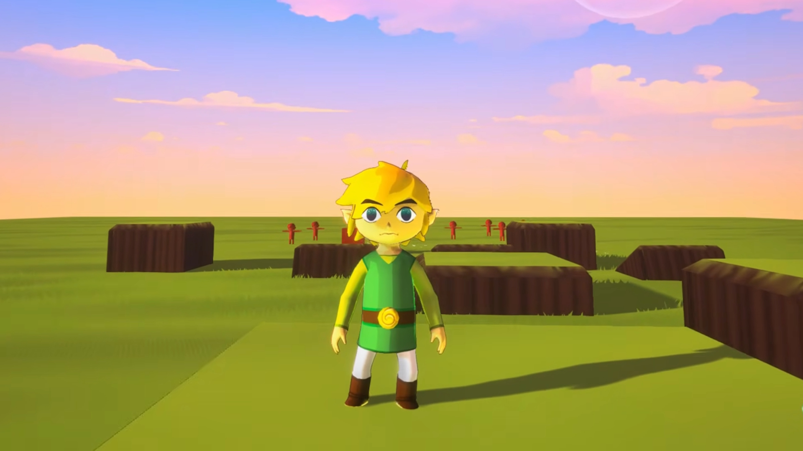
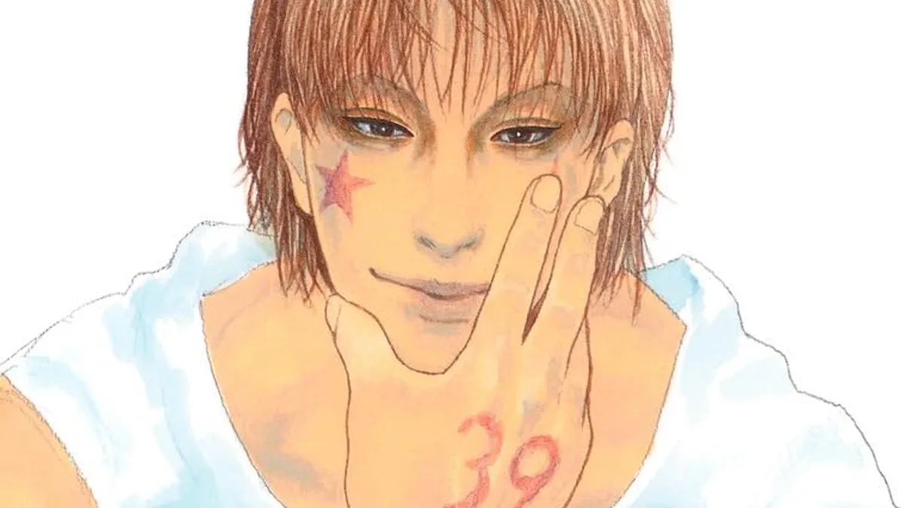
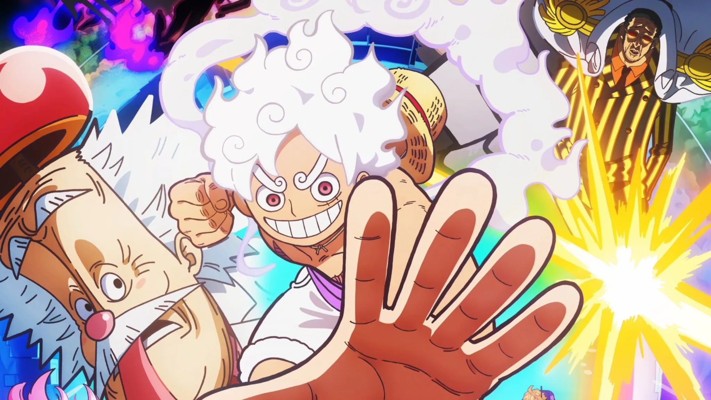
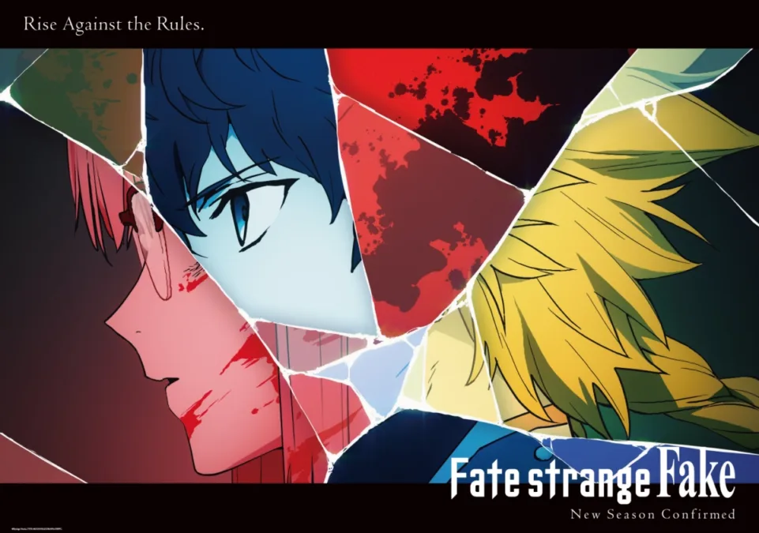

Últimas notícias
Confira as principais notícias de games, animes e filmes.
ZELDA

The Legend of Zelda: Ocarina of Time (Remake) promete uma experiência nostálgica e envolvente!
O universo de Zelda continua sendo um dos maiores destaques do mundo dos videogames. Agora, trazendo uma nova versão de Ocarina of Time, um dos maiores títulos da franquia.
Ler notícia →Lindo! Nintendo Switch 2 com tema de Zelda é revelado
A Nintendo revelou uma versão especial do Nintendo Switch 2 para comemorar os 40 anos da franquia Zelda
Ler notícia →
Zelda clássico dos portáteis ganha remake na Unreal Engine
Um fã decidiu fazer um remake de um querido jogo da franquia Zelda na Unreal Engine 5. Veja como está ficando!
Ler notícia →ANIMES

Hunter x Hunter confirma novo hiato do mangá! (Pra variar)
O mangá Hunter x Hunter, de Yoshihiro Togashi, entrou novamente em hiato e ainda não possui data para retornar, enquanto uma nova peça ganhou anúncio. A informação ganhou força na edição 41 da Weekly Shonen Jump. A obra havia retomado a serialização em 29 de junho, mas agora terá sua volta anunciada posteriormente pela Shueisha.
Ler notícia →
One Piece pode acabar tendo mais quatro anos de mangá!
O criador de One Piece, Eiichiro Oda, teria indicado que o mangá ainda possui pelo menos quatro anos de história antes de chegar ao encerramento.
Ler notícia →
Fate/strange Fake confirma nova temporada do anime!
A adaptação do anime de Fate/strange Fake recebe uma nova temporada, trazendo mais aventuras e combates épicos.
Ler notícia →GAMES

NVIDIA DLSS 5 promete levar os gráficos dos games a um novo nível
A nova geração da tecnologia de renderização neural da NVIDIA utiliza inteligência artificial para aproximar os gráficos em tempo real do fotorrealismo.
Ler notícia →
Nodusfall: HoYoverse surpreende com novo jogo de ação e fantasia
Nodusfall apresenta uma nova direção visual para os jogos da HoYoverse. (Nem só de Genshin vive o homem)
Ler notícia →Capcom dá liberdade criativa para Clovers trabalhar em Okami 2
Hideki Kamiya revela que a Capcom confia no estúdio e permite que a equipe desenvolva a sequência de Okami sem pressão constante durante a produção.
Ler notícia →